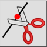
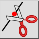
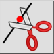
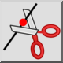

Dividi
Barra degli strumenti / Icona:
 

Menù: Modifica > Dividi
Scorciatoia: D, I
Comandi: divide | di
Questa è una traduzione automatica.
Barra degli strumenti / Icona:
 

Menù: Modifica > Dividi
Scorciatoia: D, I
Comandi: divide | di
Divide le entità in due entità distinte.